Cada gráfico muestra, para un año concreto, los usos diarios alineados de 01-01 a 12-31.
Todos utilizan el mismo eje Y, para que la comparación visual de intensidades sea directa.
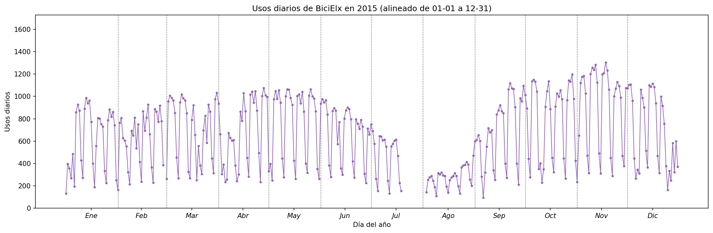
Usos diarios por día del año en 2015
Evolución de los usos diarios a lo largo del año 2015, alineada de 01-01 a 12-31 (eje Y común).
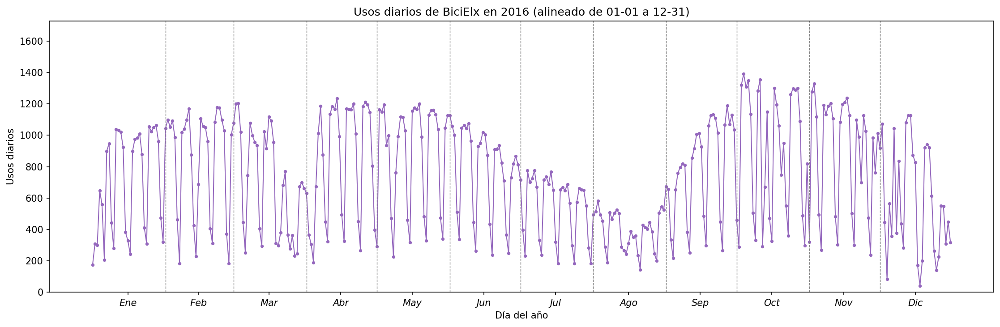
Usos diarios por día del año en 2016
Evolución de los usos diarios a lo largo del año 2016, alineada de 01-01 a 12-31 (eje Y común).
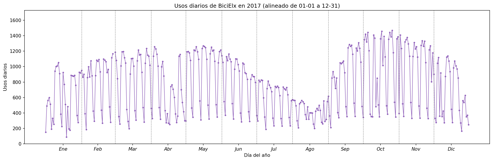
Usos diarios por día del año en 2017
Evolución de los usos diarios a lo largo del año 2017, alineada de 01-01 a 12-31 (eje Y común).
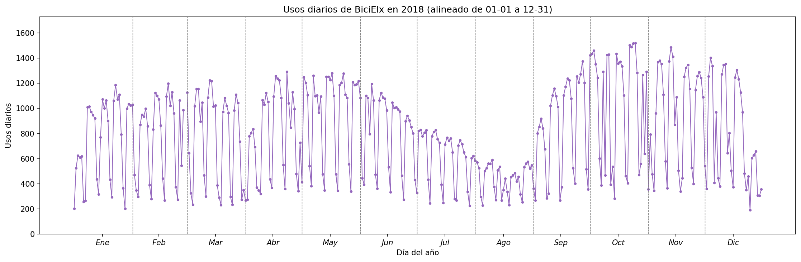
Usos diarios por día del año en 2018
Evolución de los usos diarios a lo largo del año 2018, alineada de 01-01 a 12-31 (eje Y común).
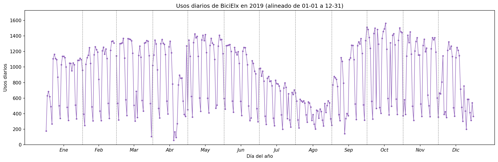
Usos diarios por día del año en 2019
Evolución de los usos diarios a lo largo del año 2019, alineada de 01-01 a 12-31 (eje Y común).
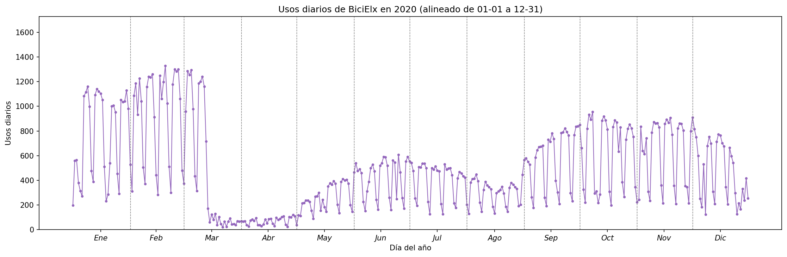
Usos diarios por día del año en 2020
Evolución de los usos diarios a lo largo del año 2020, alineada de 01-01 a 12-31 (eje Y común).
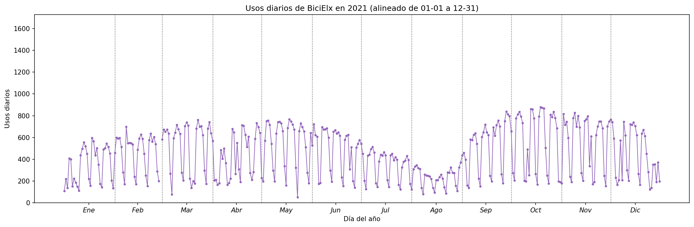
Usos diarios por día del año en 2021
Evolución de los usos diarios a lo largo del año 2021, alineada de 01-01 a 12-31 (eje Y común).
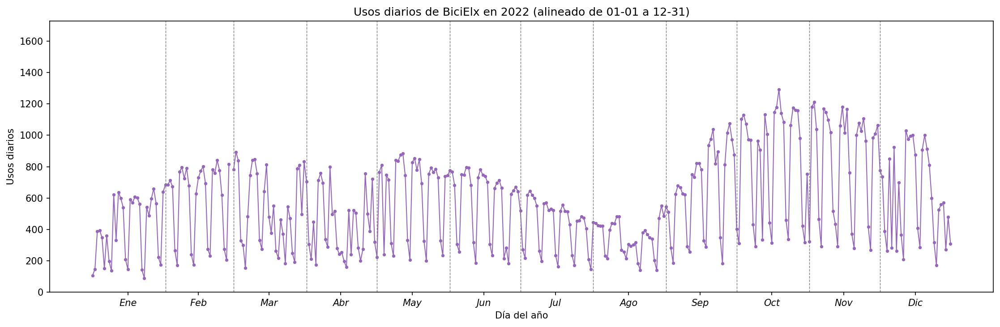
Usos diarios por día del año en 2022
Evolución de los usos diarios a lo largo del año 2022, alineada de 01-01 a 12-31 (eje Y común).
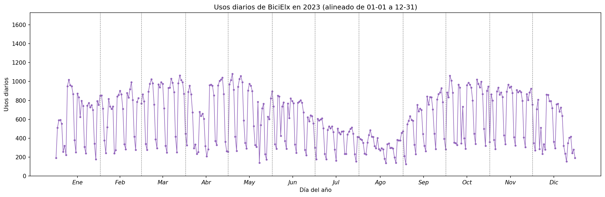
Usos diarios por día del año en 2023
Evolución de los usos diarios a lo largo del año 2023, alineada de 01-01 a 12-31 (eje Y común).
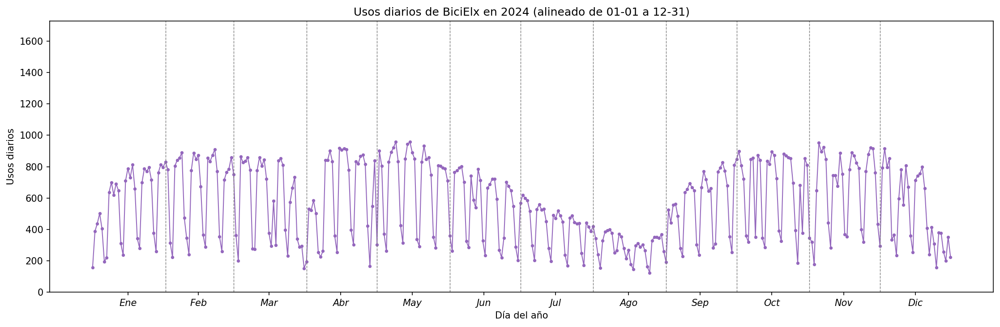
Usos diarios por día del año en 2024
Evolución de los usos diarios a lo largo del año 2024, alineada de 01-01 a 12-31 (eje Y común).
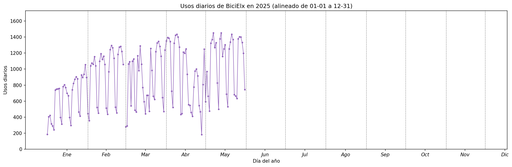
Usos diarios por día del año en 2025
Evolución de los usos diarios a lo largo del año 2025, alineada de 01-01 a 12-31 (eje Y común).